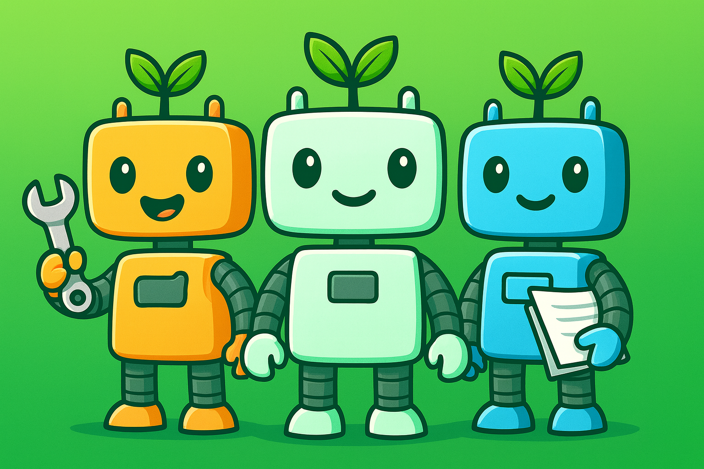

Quem Somos
Conheça a história, missão e visão do projeto Ecobots.
Nossa História
A Ecobots nasceu da necessidade crescente de lidar com o lixo urbano de forma inteligente, eficiente e sustentável. Inspirados em tecnologias aplicadas em países como a China, desenvolvemos uma solução que une robótica e geração de energia limpa.
Missão
Automatizar a coleta e processamento de resíduos com robôs inteligentes, reduzindo o impacto ambiental e promovendo energia limpa nas comunidades.
Visão
Tornar o Brasil referência em tecnologia sustentável, oferecendo soluções acessíveis que transformam lixo em energia e educação em impacto real.
Valores
- Inovação tecnológica
- Sustentabilidade ambiental
- Responsabilidade social
- Educação e inclusão
- Transparência e compromisso
